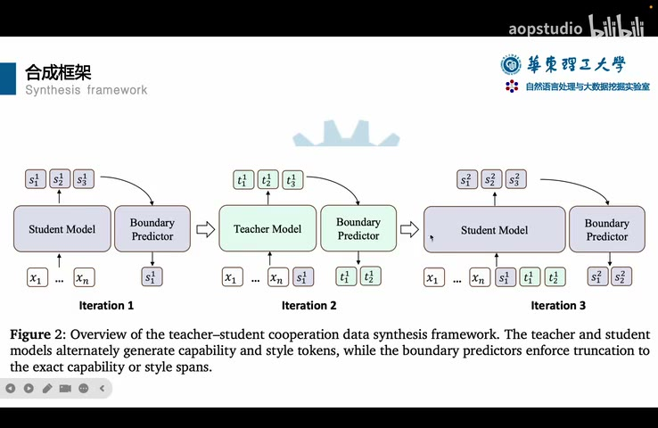

原视频 · 在线回看
点击后联网加载 B 站播放器；本地不下载整段视频。

原视频 · 在线回看
点击后联网加载 B 站播放器；本地不下载整段视频。
来源：aopstudio｜让教师模型和学生模型合作生成 SFT 数据 · 22 分 58 秒 · 深度阅读
我们想让一个较小的模型更会写代码，一个很自然的办法是请能力更强的模型做题，把它的分析过程和答案收集起来，再用这些示范训练小模型。强模型充当教师，小模型充当学生。这样做看起来很合理：既然老师解题更好，学生照着这些好答案学习，应该也会进步。
可是，对已经经过后训练的推理模型，这个过程可能出现相反结果：继续学习更强模型给出的示范，部分任务表现反而下降。这里要先区分两件事。教师能否答对题，决定了示范本身的质量；学生学习这份示范以后会怎样变化，还与示范是否适合学生有关。把这两件事连起来，才能理解为什么“更强的教师”没有自动带来“更有效的训练”。
SFT，也就是监督微调，会让模型学习示范文本的生成方式。假如一份示范包含开场白、过渡句、计算步骤和最后答案，训练通常会同时接触这些内容。我们想传给学生的可能是更好的解题方法，但教师的表达习惯也随着示范一起进入了数据。
这里的“分布不同”，可以先从常见写法理解。两个模型面对相同问题，可能习惯采用不同的开头、连接方式和分析组织方法。有的模型经常先列条件，有的会先尝试一种思路，再修正。对学生来说，完全照着教师的文本学习，既包含学会新的解题内容，也包含改变原来已经熟悉的生成习惯。研究提出，较大的风格差异可能干扰学生从示范中获益。
这种解释需要保持适当的范围。性能下降可能受到数据质量、训练参数、任务难度等多种因素影响，不能看到一次下降就直接认定是风格造成的。这里的工作通过不同数据生成方式和模型组合比较，研究“让训练材料更接近学生原有表达”是否有帮助。它针对的是一组推理模型的后训练问题，也没有否定所有教师蒸馏方法。
这项方法名为 TESSY，即教师与学生合作合成训练数据。思路是让教师负责较直接承载解题能力的内容，让学生负责自己的表达习惯，再把二者接成一份完整示范。我们可以在 论文页面 找到方法名称及对应研究；下面先把它怎样合作生成文本讲清楚。
为了分工，TESSY 把文本分成两类。一类与解题内容联系紧密，例如推进分析所需的判断；另一类更偏向语言风格，例如开场、过渡和习惯性表达。方法希望前一类更接近教师，后一类更接近学生。这样，小模型将来学习的示范，既能包含较强的解题内容，又不必把整套表达习惯全部换掉。
在主要实验组合中，教师是 GPT-OSS-120B，学生是 Qwen3-8B。两者都可以生成完整的推理文本，合作时却只保留各自负责的部分。这里有一个重要边界：把文本分成“能力”与“风格”，是为数据合成建立的操作性划分。自然语言中两者可能交织，一句过渡也可能表达重要逻辑关系，所以不能假定所有词都存在毫无争议的类别。
token 是模型处理和生成文字时使用的单位，一个 token 不一定对应一个汉字或一个完整单词。理论上，我们可能想在每个 token 的位置决定该由谁写；实际方法采用更容易操作的短片段，也叫 span。当前模型先写一小段，再检查它有没有越过职责范围。这样，两个模型不需要在每生成一个 token 时立刻交换控制权。
| 内容部分 | 希望负责生成的模型 | 保留这项分工的理由 |
|---|---|---|
| 推理中的风格性片段 | 学生模型 | 尽量保留学生熟悉的表达 |
| 推理中的能力性片段 | 教师模型 | 引入较强的解题内容 |
| 最终回答 | 学生模型 | 在已有分析之后，继续保持面向学生的数据形式 |
这张表里“最终回答”单独列出，是因为合作生成主要发生在推理过程部分。模型输出的推理文本，与最后交给用户的答案，是两个不同部分。如果把“教师负责关键推理”理解成“最后答案也由教师写”，就会误解实际实验方案，后面也无法正确比较各个变体。
合作生成需要第三个角色：边界判断器。学生开始写时，判断器寻找它第一次进入能力性内容的位置；教师开始写时，判断器寻找它第一次进入风格性内容的位置。找到这个位置，就说明当前模型已经写到另一个模型负责的部分，后面那一截不能直接保留。
边界判断器也需要训练。研究先收集教师和学生生成的推理内容，由较强模型标注片段类别，再用这些标注训练较小的 Qwen3-0.6B 模型。这里提到的数据规模约为十万个样本。使用小模型，是为了降低在生成过程中反复判断边界的开销；判断器的标注质量与识别准确性，仍然会影响最后拼接出来的文本。
接下来走一遍图中的过程。第一轮由学生模型生成，得到 S1、S2、S3 三段。判断器发现，从 S2 开始已经进入能力性内容，于是只留下 S1，把 S2 和 S3 撤回。保留下来的 S1 接到已经确定的文本后面，成为下一轮共同的上下文。
第二轮切到教师模型。教师读取题目及目前已保留的内容，接着生成 T1、T2、T3。判断器发现 T3 已经属于风格性内容，就保留 T1、T2，撤回 T3。第三轮再交给学生，从这个已经确认的前缀往下写。两个模型接着同一段文本继续，因此最终产物是一条连续的推理过程。
“撤回”在这里指舍弃暂时生成的文本，并不涉及把训练好的模型参数改回去。如果判断器没有发现越界，当前模型就可以继续写下一段，也不必机械地每轮换人。研究采用每次最多先生成 20 个 token 的设置；短片段便于较及时地发现边界，但仍会带来多次生成、检查与切换的成本。
默认从学生开始，是因为分析的开头常包含习惯性的开场表达。等推理过程生成结束，最终答案全部由学生写。这也是一个经过比较的选择：把最终答案改为教师生成，效果在该实验中更差。因此，TESSY 的设计不只是在中间穿插几个学生句子，连最后答案由谁生成，也关系到训练数据与学生的匹配程度。
训练问题来自两个开放数据集中的编程任务。研究只保留问题，去掉原有回答，合计约 3.7 万个不同问题，再用不同生成策略制作训练示范。这样，各种策略面对的是同一批任务，差别集中在推理和回答怎样产生。评测主要覆盖代码生成，同时也观察数学与科学任务，看看收益是否局限于训练所接触的领域。
比较并不限于教师全写或学生全写。我们可以先问：如果教师只提供参考答案，让学生自己重写，会怎样？如果学生生成多份候选，教师只负责挑选，又会怎样？还有一种做法，把推理过程与最终回答分别交给不同模型。把这些方法放在一起，才能区分“教师参与了”与“教师以哪种方式参与了”。
| 数据生成策略 | 教师做什么 | 学生做什么 |
|---|---|---|
| Teacher Reference | 先给参考答案 | 据此生成推理和最终回答；参考答案本身不进入最终训练样本 |
| Teacher Score | 给候选回答评分 | 生成多个候选，最后保留得分较高的 |
| Teacher Answer | 生成最终回答 | 生成推理过程 |
| Teacher Think | 生成推理过程 | 生成最终回答 |
| Teacher Only | 生成推理和最终回答 | 使用这些数据训练 |
| Teacher Mix | 提供一部分样本 | 提供另一部分样本，以一比一混合 |
| TESSY | 生成推理中的能力性片段 | 生成风格性片段和最终回答 |
这些比较有助于定位问题。例如，Teacher Score 保留的是学生自己能够生成的候选，教师主要影响选择；Teacher Only 则把整份文本换成教师的写法。两者都借助了强模型，但对学生训练分布造成的变化并不一样。TESSY 尝试在单条样本内部做更细的合作，既不完全依赖学生原有解题能力，也不把教师整段输出原样交给学生学习。
在以 Qwen3-8B 为学生的主要实验中，完全使用教师生成的推理与答案，出现了低于微调前表现的情况。TESSY 合成的数据带来了更好的训练效果，并且在部分数学任务中也表现出收益。这说明，对这组模型和任务而言，学生参与生成训练数据有价值；教师文本占比越高，结果未必越好。
换成更大的学生后，情况发生了一些变化。较大的 Qwen3 学生从 Teacher Only 数据中也能得到一定收益，尽管整体仍未超过对应的合作方法。这个差别很重要：小模型上“教师全写导致下降”的结果，不能直接搬到另一个学生身上。学生原有能力和训练状态，都会影响它怎样利用同一类示范。
研究还交换了合成数据的学生与真正接受训练的学生。用较小学生参与合成的数据去训练较大学生，效果不如较大学生自己参与；反过来，使用较大学生参与生成的数据去训练小学生，也未必更好。这样一来，问题就超出了“不同厂商模型说话风格不同”的直觉：同一家族、不同尺寸的模型，也可能更适合带有自身生成特征的数据。
教师模型的比较同样支持需要考虑匹配关系。换用其他较强模型后，完全采用教师数据仍可能出现退化，而合作方式在所测组合中表现更稳。不过，这些结果只覆盖研究选择的模型与设置，不能保证任意教师、学生和领域都能复现同样排序。方法值得注意的地方，是让数据合成策略把学生本身纳入考虑。
合作数据里约有 22.4% 的 token 来自较弱的学生。直觉上可能担心，学生写得更多，会不会降低整条解题文本的质量？研究在不同生成长度上做了比较：在部分相同长度限制下，合作生成的结果优于教师独自生成；当教师允许使用更长输出时，教师独自生成又可能达到更高结果。
这说明比较时要把预算说清楚。给教师更多生成空间，可能让它补充分析、尝试不同路线；而合作生成是在另一种分工下使用预算。相同长度限制下表现更好，不能自动推成无论允许多少计算都更好。此外，生成样本在题目上答得如何，与这些样本用于训练以后学生提升多少，是两个观察层次，也应当分开理解。
研究还把合成文本转换为向量，再用 PCA 将高维表示压缩到便于画图的少数维度。图上，合作数据比教师独自生成的数据更靠近学生数据，这与方法希望保留学生表达的目标一致。不过，二维图只呈现高维差别的一部分，“点靠得近”本身无法证明它就是性能提升的全部原因，需要结合前面的任务评测一起看。
我们可能继续问：如果担心继续微调改变太多参数，能否只更新少量参数？LoRA 是一种常见的参数高效微调方式，通过训练额外的低秩参数来调整模型，避免直接训练全部原有参数。它能减少需要训练的参数量，但参数少并不等于对行为影响一定小。
研究用 Teacher Only 数据尝试 LoRA，结果在该设置下没有缓解退化，反而比对应的全量微调更差。一个可能解释是，数据表达差异需要较充分的适应，而受限的参数更新没有很好完成这种适应；与此同时，更新仍可能影响原有行为。这些是对实验现象的解释，不能扩大为“LoRA 总比全量微调差”。
另一个比较是从基座模型开始，还是从已经经过后训练的推理模型继续。基座模型可以理解为主要经过预训练、尚未完成相应助手与推理后训练的版本。在这组实验里，继续训练已有推理模型得到的效果更好，因为它已经具备有用的行为和能力。这个结果也有助于理解研究起点：我们在改善一个已经会做事的模型，所以要同时留意新增能力与原有表现的保留。
强模型生成的正确答案，与适合某个学生学习的训练材料，之间还隔着数据如何组织、怎样表达以及学生原有能力这些条件。TESSY 把学生放进数据生成过程，让它保留风格性内容和最终回答，让教师提供推理中的关键内容，再由边界判断器决定每次保留哪一段。
这项工作最有价值的问题是：我们希望学生获得哪种能力，又希望保留哪些已经有效的行为？生成数据时同时考虑这两个方向，比只比较教师参数规模更接近真实训练问题。方法本身仍受边界识别质量、生成开销、任务范围和模型组合约束，也可以继续与更好的数据筛选方法结合。
先用自己的话讲一遍图中的 S1、S2、T1、T2：谁先写，哪些文字被保留，为什么下一轮需要读到同一份前缀。能把这个过程讲清，就理解了合作生成实际在做什么。
再比较 Teacher Think 与 TESSY。两者的最终答案都可以交给学生，但前者把整段推理交给教师，后者在推理内部也保留学生参与。最后记住，看到某种方法分数更高时，要连同学生是谁、生成长度多大、训练和评测是什么任务一起理解。